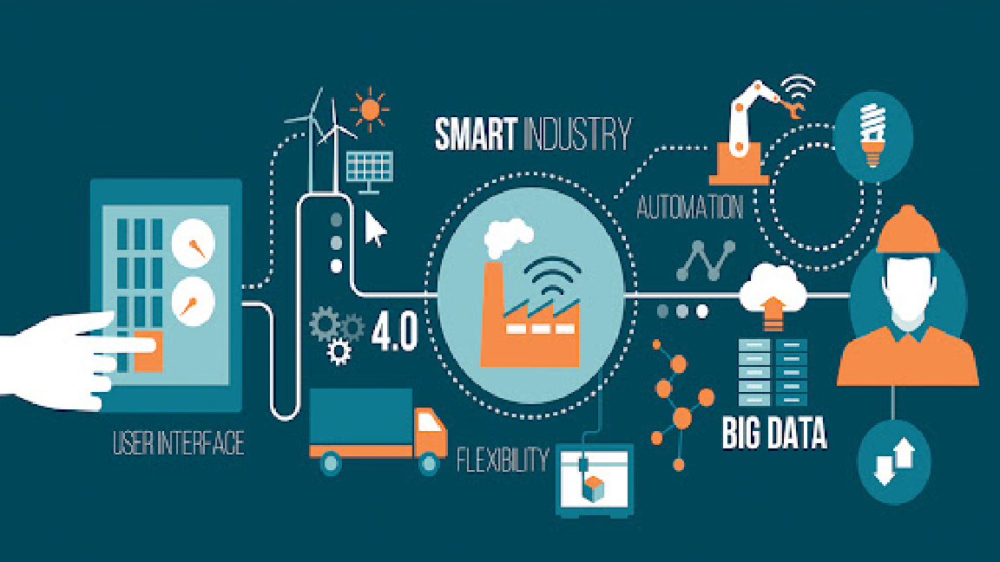
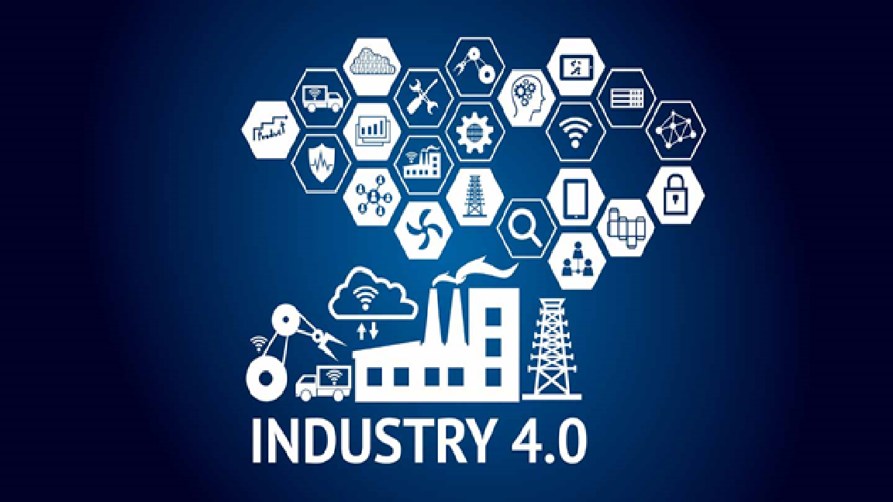

Cách mạng 4.0 là "Cách mạng công nghiệp lần thứ tư" đã được áp dụng cho sự phát triển công nghệ quan trọng một vài lần trong 75 năm qua, và là để thảo luận về học thuật
Vào Năm 2011, khái niệm “công nghệ 4.0” được giới thiệu bởi nhóm khoa học người đức nên có thể nói là xuất phát từ đức và được toàn cầu hóa.

Vì sao công nghệ 4.0 phát triển?
by tuấn Anh:Nguyên nhân nhằm thúc đẩy sự phát triển công nghiệp hoá hiện đại hoá tạo điều kiện để con người phát triển các công nghệ mới như trí tuệ nhân tạo công nghệ máy bay ko người lái
Với nhu cầu phát triển kinh tế, đáp ứng lao động cao và tự động hóa, phát triển trí tuệ nhân tạo và phương tiện không người lái, với nhu cầù nhằm phát triển công nghiệp hóa, hiện đại hóa, tự động hóa, Nhân loại phát triển công,nông,thương nghiệp công nghệ 4.0
Ảnh hưởng của cách mạng công nghệ 4.0 đến kinh tế thế giới
Ảnh hưởng của cách mạng công nghệ 4.0 đến xã hội thế giới
Công nghệ sinh học:
-Tập trung vào nghiên cứu để tạo ra những bước nhảy vọt trong nông nghiệp, thủy sản, y dược, chế biến thực phẩm, bảo vệ môi trường, năng lượng tái tạo, hóa học và vật liệu.
-Tạo ra các giống cây trồng, vật nuôi mới, có đặc tính ưu việt, phù hợp với yêu cầu của thị trường từ công nghệ di truyền, nhân giống, các sản phẩm y - dược mới, hiệu quả chữa bệnh cao, đáp ứng ngày càng tốt nhu cầu đa dạng về chăm sóc sức khỏe của người dân. ( các loại thuốc chữa bệnh ung thư, robot phẫu thuật,…)
Công nghệ vật liệu:
-Vật liệu mới và Vật liệu kỹ thuật cao có thể coi là chìa khóa cho sự phát triển tiến bộ công nghệ trong hầu hết các lĩnh vực của cuộc sống và loại bỏ giới hạn trong những quan niệm truyền thống về sắt, thép, xi măng hay vật liệu xây dựng cơ bản và đồng thời sự tích hợp của những tiến bộ khoa học mới nhất nhằm tạo ra những ứng dụng công nghệ cao như "vật liệu điện tử", "vật liệu tích trữ và chuyển hóa năng lượng", "vật liệu polymer-composite hiệu suất cao", "vật liệu nhớ hình", "vật liệu đáp ứng môi trường"…
Công nghệ năng lượng:
Xe ô tô, xe máy sử dụng điện làm nhiên liệu, lò phản ứng hạt nhân tiên tiến, năng lượng sóng/thủy triều, năng lượng mặt trời (pin mặt trời), năng lượng gió (tháp điện gió)
Công nghệ thông tin:
-Tăng cường sử dụng truyền thông di động, internet và Big Data.
-Phát triển trí tuệ nhân tạo (AI).
-Phát triển công nghệ Robot.

Ảnh hưởng của cách mạng công nghệ 4.0 đến kinh tế Việt Nam
Cách mạng 4.0 không chỉ ảnh hưởng đến ngành kinh tế, xã hội các nước phát triển trên thế giới mà còn tác động đến nền kinh tế và xã hội các nước đang phát triển như là Việt Nam:
-Ứng dụng khoa học công nghệ vào các lĩnh vực, tạo ra các sản phẩm.Qua đó góp phần thúc đẩy nền kinh tế phát triển Vd: ngành Công nghiệp công nghệ thông tin. Nhà máy lắp ráp, sản xuất điện thoại Vsmart (Khu công nghệ cao Hoà Lạc, Hà Nội) Nhà máy lắp rap chip và vật liệu bán dẫn Samsung (quận nine, TpHCM)
-Con người Việt Nam tiếp cận với Công nghệ trong việc văn phòng và sản xuất, tương tác với hệ thống số dễ dàng, đạt được hiệu quả cao trong công việc làm gia tăng giá trị vật chất, của cải.Vậy có thể nói cách mạng khoa học và công nghệ giúp chúng ta làm việc hiệu quả hơn, tạo ra sản phẩm tốt, có giá trị cao. Qua đó nền Kinh tế Việt Nam được thúc đẩy, phát triển.
Ảnh hưởng của cách mạng công nghệ 4.0 đến xã hội Việt Nam
Cuộc cách mạng khoa học và công nghệ đối với xã hội Việt Nam đang tạo tiền đề, điều kiện và cũng là động lực tạo ra, thúc đẩy hàng loạt các hiện tượng, quá trình khác của đời sống xã hội, con người.
- Nó thúc đẩy kinh tế thị trường phát triển mạnh mẽ chưa từng có, gia tăng tốc độ phát triển các lực lượng sản xuất của nhân loại, biến khoa học thành lực lượng sản xuất trực tiếp, giải phóng con người khỏi các chức năng thực hiện, các chức năng kiểm tra, quản lý các quá trình sản xuất và cả chức năng logic.
- Sự ảnh hưởng của cách mạng khoa học và công nghệ đến sự triển xã hội và con người ngày nay luôn là căn cứ để dự báo tương lai, chiều hướng phát triển của kinh tế, văn hóa, xã hội và con người của mỗi quốc gia cũng như của nhân loại.
- Cách mạng khoa học và công nghệ đang thể hiện rõ vai trò đặc biệt trong việc rút ngắn khoảng cách về trình độ sản xuất, quản lý xã hội, khoa học, công nghệ, kỹ thuật và mức độ phát triển con người giữa các nước đang phát triển và các nước phát triển.
-Những thành quả to lớn đó của cách mạng khoa học và công nghệ đang làm thay đổi điều kiện và môi trường sống của con người, ảnh hưởng của nó đến t sống con người